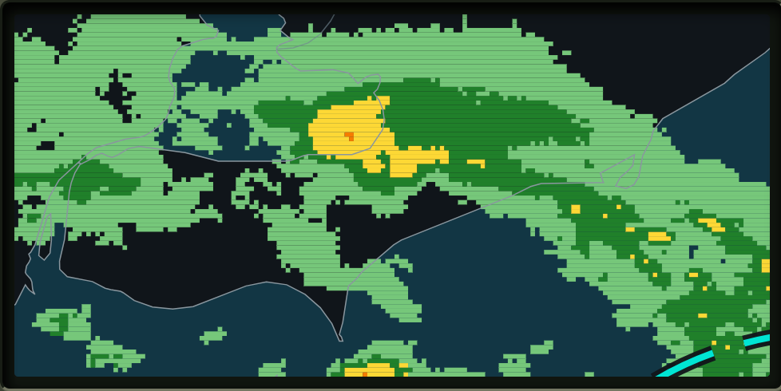
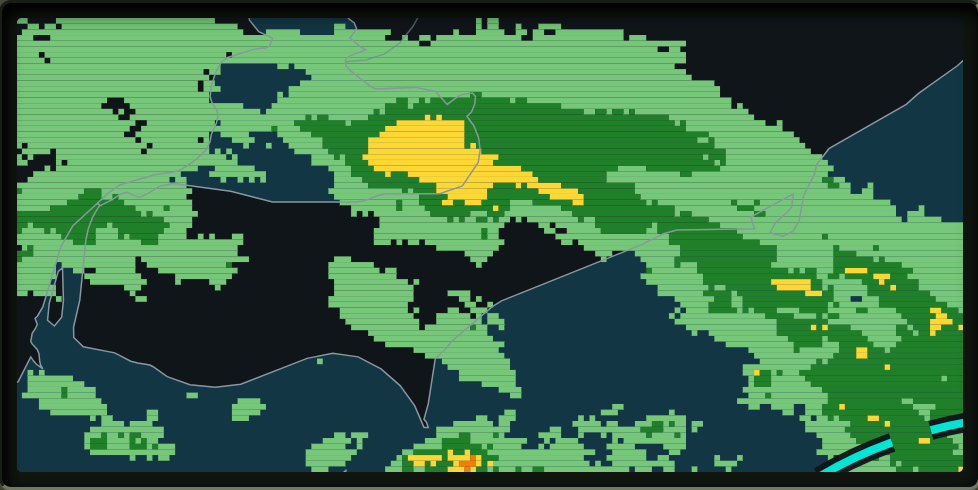
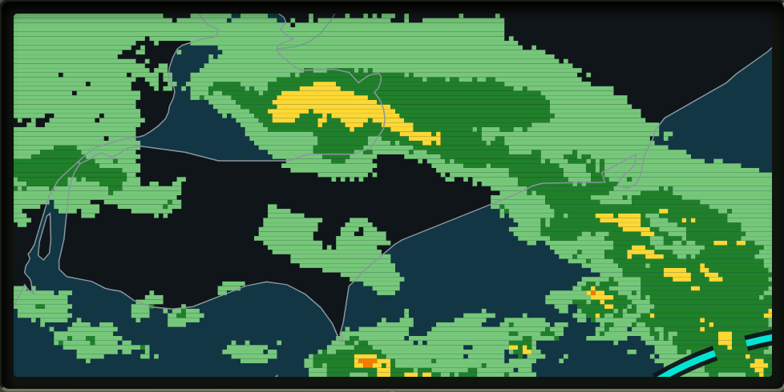
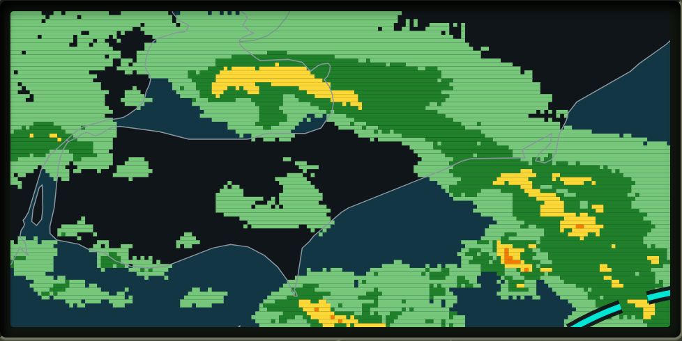

Fore!Cast Target RangeCleveland Open · Four-ball card
All prototypes
Daily Cleveland board
Lake Effect Four




Tap or click a target to aim ball one.
Targets move with the radar after every shot. The center ring earns full points; the outer ring earns half.
What this prototype is testing
- Choose one target on each radar frame.
- Large targets are safer; smaller storm targets pay more.
- After four balls, compare total score—not strokes.
The aiming is deliberately simple. The question is whether target selection alone creates tension and immediate replay desire.
Standalone responsive prototype · no account, persistence, or production game rules